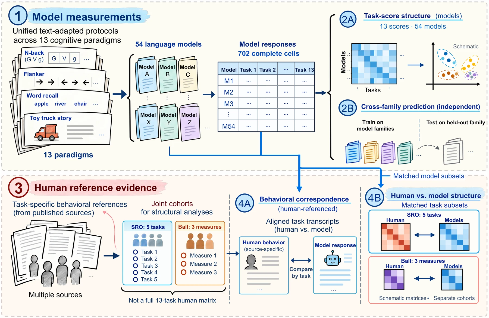

CogBattery
Human cognitive tasks, adapted to text, with source-specific human references for every paradigm.
Matching the direction of a human effect does not mean matching the errors behind it. CogBattery evaluates language models on text adaptations of classic paradigms in working memory, cognitive control, episodic memory, social reasoning, and metacognition, and compares each result with the human data published for that paradigm.
- Shared effects, different errors. Like humans, models respond more to n-back lures than to controls, yet they make far more false alarms on ordinary non-targets.
- Reporting, not signal. Most models' verbal confidence separates correct from incorrect answers less well than humans' does, and most always choose the same wager, while their token probabilities discriminate about as well as human reports.
- Cognitive groupings do not organize model differences. Model scores share two dimensions, the first tied to scale, and named cognitive groups predict held-out model families no more reliably than random groups of equal size.

CogBattery was first released as CogArena (arXiv 2607.24999). It was renamed to avoid confusion with an unrelated benchmark of the same name.
Tasks
All model responses are text. Memory materials stay visible, and human timing and motor demands are omitted. Human references come from separate published sources, not one common cohort.
Example items
2-back
1:G 2:V 3:g
The answer is MATCH: the current letter matches the one two positions earlier, ignoring case. Earlier letters and answers stay visible.
Stroop, incongruent trial
Word: RED Ink-color label: green
The answer is GREEN. Congruent trials use matching word and color labels.
Results
One key measure per paradigm, as in Table 3 of the paper. Invalid task answers count as wrong. There is no overall score: the paradigms measure different things, and a combined human-likeness score would hide that. Sort by any column, or filter by family.
Cell shading shows how far a model is from the human mean, scaled by the spread across models for that measure. It shows distance, not quality: for several measures a higher value is not better. WAG shows whether a model always placed the same wager; no human proportion exists for it. Data: leaderboard.json.
Submit a model
- Run the battery on your model with the released command-line tool, using the default protocol (temperature 0, one response per item).
- Open a pull request that adds your raw response records and the run manifest under
submissions/<model>/. - We rerun the scoring script on your records and add the scored row to this table. Scores computed elsewhere are not accepted as is.
The paper's 54-model protocol is being added to the repository. Until it is, see the repository README for the current command-line tool.
Citation
@article{cogarena2026,
title = {CogArena: A Multimethod Evaluation of Cognitive Ability Structure in Large Language Models},
journal = {arXiv preprint arXiv:2607.24999},
year = {2026}
}